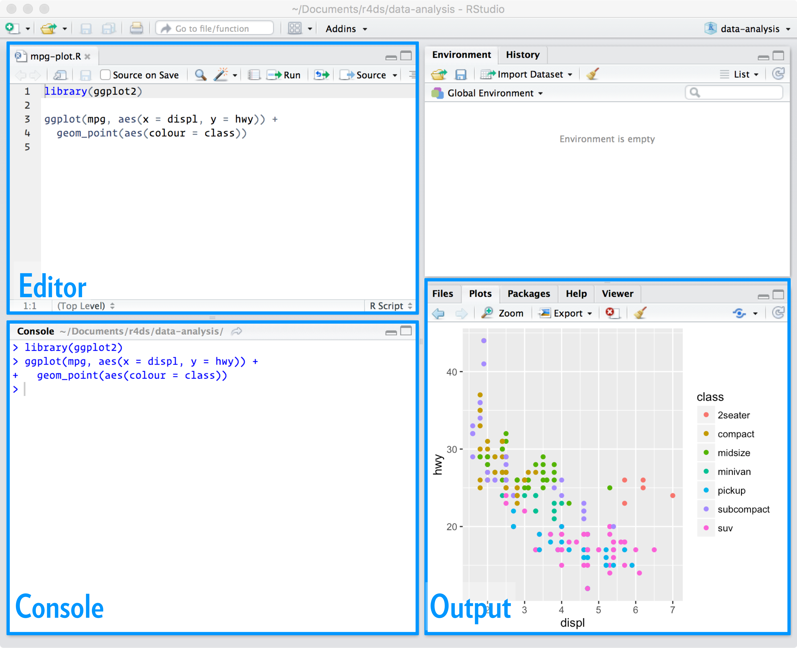
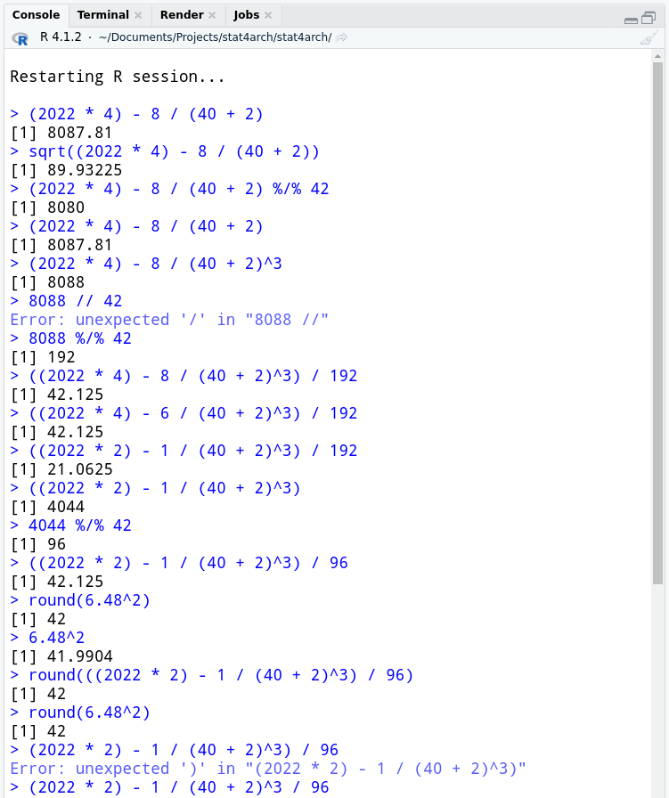
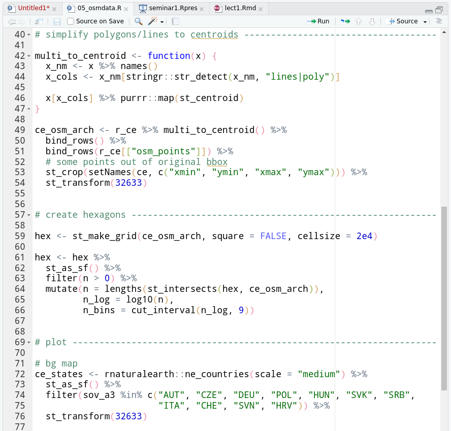
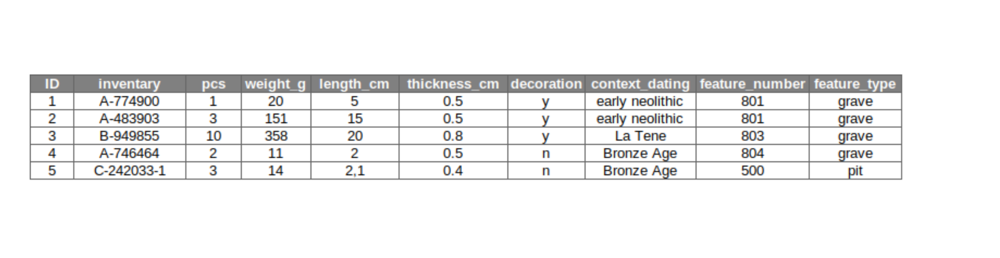
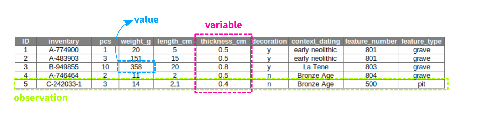
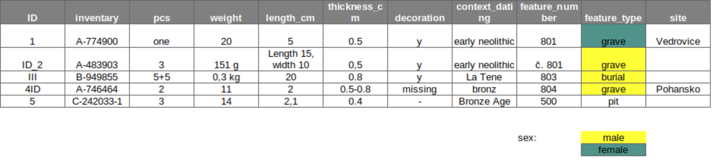

stat4arch
author: Petr Pajdla & Peter Tkáč autosize: true width: 1920 height: 1080
AES_707: Statistics seminar for archaeologists
Course info
type: prompt
Course website: https://petrpajdla.github.io/stat4arch/
To pass the course:
- be active (and present) during the bi-weekly on-site sessions,
- complete the semestral project assignment.
- be active (and present) during the bi-weekly on-site sessions,
Seminar 1
type: section
17. 2. 2022
- Introduction to quantitative methods in archaeology.
- Introduction to the R programming language and environment.
- Data organization and tidy data.
Quantitative methods in archaeology
type: section
Maths and archaeology? Why?
type: prompt (brainstorming)
R programming language
type: section
What is R?
left: 10%

- Scripting language and environment for statistical computing and graphics.
- Open source, free software.
- Alternatives: Python, SQL, JavaScript etc.
- Clicking alternatives: Statistica, PAST etc.
RStudio
left: 20%
- IDE (Integrated Development Environment) for R (supports also other languages).
RStudio is a set of integrated tools designed to help you be more productive with R. It includes a console, syntax-highlighting editor that supports direct code execution, and a variety of robust tools for plotting, viewing history, debugging and managing your workspace.
RStudio IDE
right: 30% title: false

RStudio IDE
- Editor is where you view and edit your scripts.
- Console shows the output after you execute the code.
- Environment lists available objects.
And much more…
Console
class: small-code
R version 4.1.2 (2021-11-01) -- "Bird Hippie"
Copyright (C) 2021 The R Foundation for Statistical Computing
Platform: x86_64-pc-linux-gnu (64-bit)
*
R is free software and comes with ABSOLUTELY NO WARRANTY.
You are welcome to redistribute it under certain conditions.
Type 'license()' or 'licence()' for distribution details.
Natural language support but running in an English locale
R is a collaborative project with many contributors.
Type 'contributors()' for more information and
'citation()' on how to cite R or R packages in publications.
Type 'demo()' for some demos, 'help()' for on-line help, or
'help.start()' for an HTML browser interface to help.
Type 'q()' to quit R.
> R is a smart calculator
class: small-code incremental: false
2 + 40[1] 42((2022 * 2) - 1 / (40 + 2)^3) / 2[1] 2022round(6.48^2)[1] 42sqrt(1764)[1] 428 * 10^10[1] 8e+10Console vs script
title: false
Console

- Console evaluates the input immediately after hitting Enter and returns the output.
Script

- Script documents the code, i.e. the sequence of commands.
- Script is a plain text document.
ctrl + enter send line of code from script to console
Notion of functions and objects
incremental: false
Object
- Everything is an object.
- Contains data.
- Some objects are already populated with something…
pi[1] 3.141593pi + 1[1] 4.141593Function
- Ends with parentheses.
function-name(args...) - Arguments go in the parentheses.
- Does something.
round(x = pi)[1] 3round(x = pi, digits = Inf)[1] 3.141593Data, databases and data organization
type: section
What is database?
type: prompt (Brainstorming)
Relational database - basic terms
incremental: false 
Relational database - basic terms
incremental: false 
- variable (proměnná / atribut) - napr. hmotnosť keramického fragmentu
- observation / object (entita / záznam) - napr. konkrétny keramický fragment
- value (hodnota)
- primary key / unique ID (primární klíč)
Tidy data

Types of variables
Categorical
- dichotomies (dichotomická) - prítomnosť alebo neprítomnosť nejakého javu (“Y/N”)
- nominal (nominální) - archeologické datovanie (“neolit”), číslo objektu, keramický typ
- ordinal / rank (ordinální, pořadová) - tlupa / kmeň / náčelníctvo / štát, alebo: komponenta / sídelný areál / nadkomunitný areál
Numeric
discrete (diskrétní) - môžu byť len celé čísla - napr. počet lokalít, počet bronzových spôn
continuous (spojité / metrické) - môže byť akékoľvek reálne číslo - hmotnosť ker. fragmentu, dĺžka železného meča
interval (intervalové) - numericky vyjadrujú vzdialenosť na vyjadrenie hierarchického vzťahu, nemajú ale zmysluplný nultý bod, umožňujú relatívne porovnávanie ale nie kalkulácie (napr. BC/AD - rozdiel medzi 400AD a 800AD je 400 rokov, 400AD ale nieje 2 krát staršie než 800AD )
ratio (poměrové) - na rozdiel od intervalových premenných umožňujú kalkulácie (napr. vek - objekt starý 1000 rokov je 2krát starší než objekt starý 500; dĺžka meča,…)
Tidy data
incremental: false ## What’s wrong? 
Basic tidy data principles
- one variable in one column
- one observation in one row
- one value in one cell
- backup your data!
- be consistent!